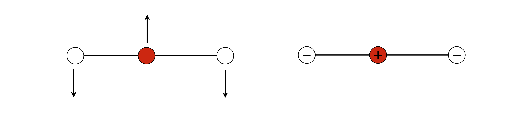
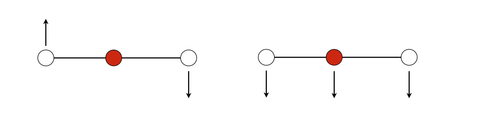
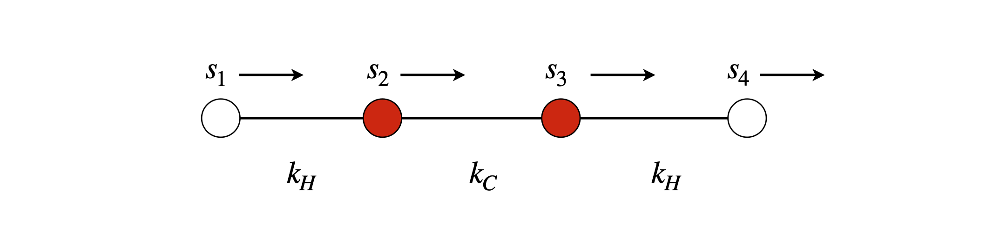
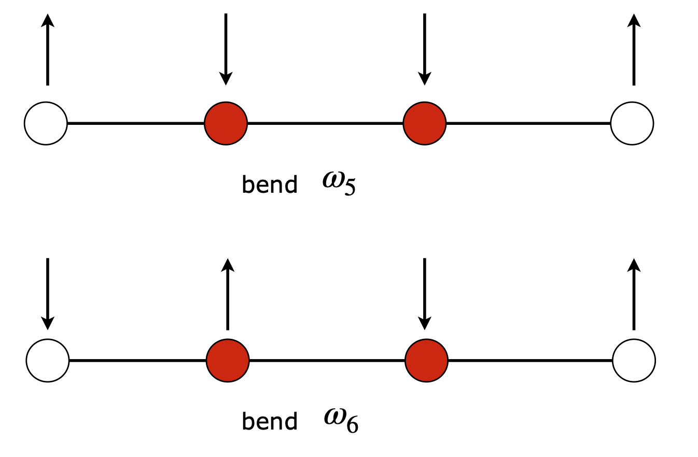

Solutions Q55 - 58
Contents
Solutions Q55 - 58#
# import all python add-ons etc that will be needed later on
%matplotlib inline
import numpy as np
from numpy import linalg as LA
import matplotlib.pyplot as plt
from sympy import *
init_printing() # allows printing of SymPy results in typeset maths format
plt.rcParams.update({'font.size': 14}) # set font size for plots
Q55 answer#
(a) The total potential energy \(V\) is proportional to the amount the bobs are raised and is
By using the construction from the example in Section 14.2 the height raised is
and similarly for \(h_2\), then
The displacements \(s_1\) and \(s_2\) are \(s_1 = L_1 \sin(\theta_1) \approx L_1\theta_1\) and \(s_2 = s_1 + L_2\sin(\theta_2) \approx s_1 + L_2\theta_2\). Writing the potential in terms of the s displacements gives
The forces are
The masses are not the same, therefore, it is necessary to work with reduced mass or force per unit mass. This means dividing through by the mass, and the matrix equation becomes
(b) The eigenvalues of the secular determinant with \(L_1 = L_2 = L\) can be obtained by hand. Simplifying and substituting for \(M\) for the ratio of masses gives
The characteristic equation is \(((1 + \lambda)^2 - M)g/L = 0\) which has solutions \(\lambda =(-1\pm\sqrt{M})g/l\).
Because the motion is harmonic, using an equation analogous to equation 54 with force per unit mass gives
which means that the normal mode or characteristic frequencies for small oscillations are \(\omega^2 = (1 \pm \sqrt{M})g/L\) where \(M = m_2/(m_1 + m_2)\).
(c) If the coupling between the two pendulums is also a spring, an extra term is added to the potential, which becomes
This has the effect only of changing the apparent length of the second pendulum \(\displaystyle \frac{1}{L_2} \to \frac{1}{L_2}+k\), and, for convenience, redefine \(k\to m_2gk\) , and we can go straight to equation 77 and modify it accordingly.
and making the pendulums the same length, the secular determinant is
whose solutions are \(\displaystyle \lambda = \pm g\left(\frac{1}{L}+M \right)\sqrt{M}-\frac{g}{L}\) which gives frequencies
When the force constant \(k\) is zero, this is the same solution as in part(b),as you would expect. If \(m_2\) is zero, \(\omega\) reduces to the frequency of a simple pendulum.
An interesting situation occurs if \((1+kL)\sqrt{M}=1\) because one vibrational frequency becomes zero. This means that the lower of the two weights moves rather like a piston up and down with no horizontal displacement with respect to the upper pendulum which moves with \(\omega^2=2g/L\) or twice the frequency of a single pendulum of length \(L\).
Q56 answer#
Hooke’s law is used to find the potential energy of each spring. Suppose that mass 1 is moved by \(r\), and mass 2 by \(s\), then spring 1 is displaced by \(r\) and spring 3 by s and the middle spring by the difference \(s - r\). The total energy is thus
Force is the negative derivative of the potential with respect to \(r\) and \(s\), and also mass times acceleration, giving
In matrix form, see equation 53,
which has a characteristic equation
and has solutions \(\lambda = -k, \lambda = -k(1 + 2n)\) with their respective eigenvectors
These vectors indicate the normal mode geometries as they represent the displacements of the two masses. The normal mode frequencies are calculated using equation 54, producing \(m\omega_1^2 =k\) and \(m_2^2 =k(1+2n)\). The modes are that of two springs extending and one being compressed. The lower frequency mode \(\omega_1\) occurs when both masses move in the same direction and by the same amount so that the central spring is not compressed. The higher frequency occurs when the two masses approach one another and the central spring is compressed and extended. This problem is very similar to the example of the two pendulums and a spring.
Q57 answer#
(a) The only normal mode in the plane of the figure is shown below, as only this arrangement of displacements leaves the centre of mass of the molecule unchanged and produces no overall rotation, i.e. the total angular momentum is unchanged.

Figure 94. Bending normal modes in a linear triatomic molecule.
(b) The potential energy is the sum of terms bending the molecule about the central atom, therefore the potential is similar to that calculated for vibration except, that the force constant is now that for a bend.
By letting \(k_b \to k\) we can use previous results and write down
and the modes are
Inspection of these equations shows that \(Q_1\) is a rotation and \(Q_3\) a translation. The former, because the vectors are \(-s_1\) and \(+s_3\) and \(s_2 = 0\); the latter as they are all positive. Drawing them out shows this clearly.

Figure 95. Displacements for mode \(Q_1\) left and \(Q_3\) right neither is a normal mode; (left) causes a rotation and (right) a translation.
(c) The relative displacements in mode \(Q_2\) are, as before, in the ratio \(2m_O/m_C\). As the two bending vibrations are degenerate because of symmetry, they have a fixed phase with one another and the motion is in orthogonal directions. When both modes are considered together when they are exactly \(90^\mathrm{o}\) out of phase with one another then the atoms’ motion would appear to be circular. The outer atoms would rotate in the opposite sense to the middle one so that the total angular momentum is zero.
Q58 answer#
First,define the displacements \(s_1 \to s_4\) along the x-axis,and calculate the potential energy as the sum of squared terms,

Figure 96. Basis set vectors for stretching vibrations.
The forces are calculated by differentiating this equation in each displacement.
The force matrix is
and is real, and in this instance, symmetrical (Hermitian), so we expect the eigenvalues to be real and the eigenvectors to be orthogonal.
The pattern of entries shows us that the forces only couple adjacent atoms. If we had used a more complicated force field, for example each atom connected not only to its neighbour but also to the next one, i.e. each H atom coupled to both C atoms, there would be an extra entry on each row to allow for this.
At this point, it is advantageous to move over to using Python/Sympy and the GFG method, unless, of course you have an idle few hours and want to do the calculation by hand!
As this calculation is essentially the same as Algorithm 7, only a couple of points specific to this molecule are mentioned here. Note, however, that all the matrices and vectors have to be four dimensional. The \(\pmb{G}\) diagonal matrix of reciprocal square root mass is calculated as shown below;
m_c, m_h, kh, kc = symbols('m_c, m_h, kh, kc')
m_c = 12
m_h = 1
kh = 11*kc/10 #11/10 instead of 1.1 to keep ratio. 1.1 will give decimal
G = Matrix([[1/sqrt(m_h),0,0,0],[0,1/sqrt(m_c),0,0],[0,0,1/sqrt(m_c),0],[0,0,0, 1/sqrt(m_h)]])
F = Matrix([[-kh,kh,0,0],[kh,-kh-kc,kc,0],[0,kc,-kh-kc,kh],[0,0,kh,-kh]])
M = G*F*G
M
vecs, vals = M.diagonalize()
vals
for i in range(4):
print(vals[i,i].evalf()/kc) # print numerical value
0
-1.19166666666667
-1.20636115428749
-0.151972179045848
Solving produces the eigenvalues, which are \(\omega_0^2 = 0,\omega_1^2 = 0.192k_c, \omega_3^2 = 1.206k_c, \omega_4^2 = 1.152kc\), and eigenvectors, which are not normalized, are
vecs.evalf() # eigenvectors as 4 columns
Looking at the columns, the first has displacements all in the same direction so this must be a translation with zero frequency; the second eigenvalue \(\omega_2\) corresponds to the second eigenvector. This is an asymmetric stretch, as is the third. (We take motion about centre of molecule.) The fourth is the symmetric stretch. Drawing these three modes out makes this clear. Note that it doesn’t matter which direction is positive since multiplying the vectors by \(-1\) makes no difference, because on the other half of the vibration the arrows in the figure change direction. (You may need to check your own calculation because the eigenvector matrix may not be in the same order as here)
Figure 97. Symmetric stretch and two asymmetric stretches.
The mode frequency ratios are in rough agreement with the measured frequencies; the two highest frequencies are for the asymmetric stretches, \(\omega_2\) and \(\omega_3\), and are similar in value. The symmetric stretch is lower in frequency, but experimentally, not nearly as low as this calculation suggests.
The bending modes are calculated in a similar manner, with displacements perpendicular to the bonds. Only two of the displacements produce bends and their frequencies are \(\omega_5^2 = 1.098k_b\) and \(\omega_6^2 = 1.083k_b\). If we assume a single bending force constant \(k_b\), which is less than that for the stretch, these two modes should correspond to the \(612\) and \(619\;\mathrm{cm^{-1}}\) transitions but saying which is which with such a crude model of the potential energy, does not make sense at all. The bends are doubly degenerate because it does not matter for a bend in a linear molecule if it occurs in the plane of the drawing, as above, or at right angles to this.

Figure 98. Bending modes.